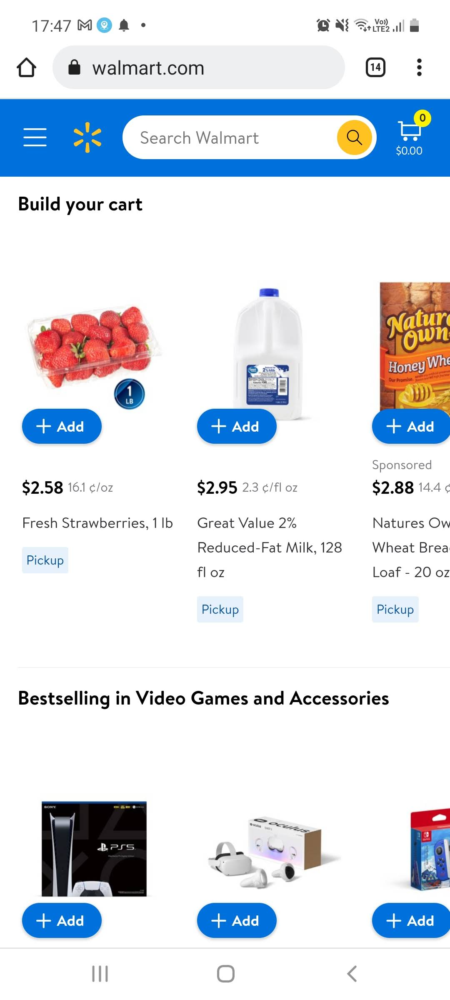

White Space
The principle ilustrated by google's search page is white space It's design focuses on what it is supposed to do, and does it very effictively, the main thing it is there to do is to dp searches and it does not distracts the user with adds and other things, instead it opts for a lot of white space, a search bar and their logo. The success is often atributed to this feature of their design. (Comparing its design to Yahoo`s is an easy way to see the strength of their design choice.)
Visual Hierarchy
The Church of Jesus Christ of Latter Day Saints
The principle ilustrated by the church`s website is visual hierarchy. The website shows through design what the most important part of the page is. It positions the most important article on top, making it the first thing the user sees and also making of a bigger size than the others which naturally draws more attention. (One interesting only visible on the desktop version is that it uses the golden ratio, and currently Jesus Christ`s face is right in the center.
Proximity
Walmart
The principle ilustrated by Walmart`s website is Proximity. Their website does a good job grouping the different kind of suggestions of products, as visible in the picture, it separates them by category showing electronics more or less distant from foods, making it easier for the user to choose what he or she needs to buy.
